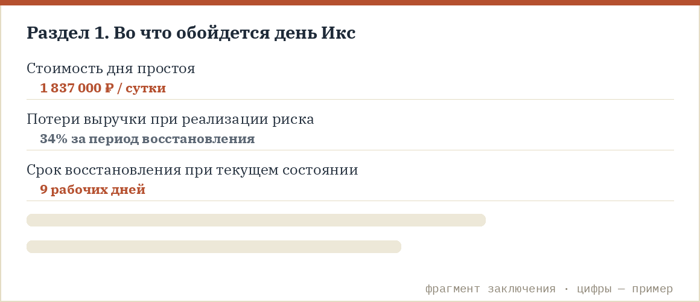
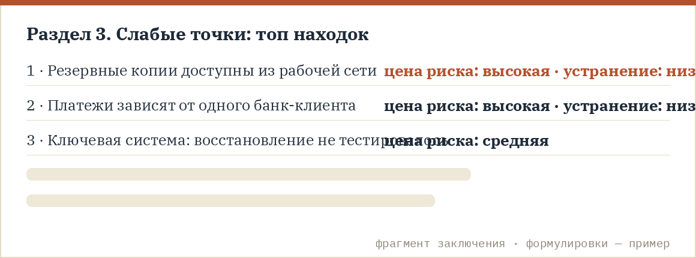
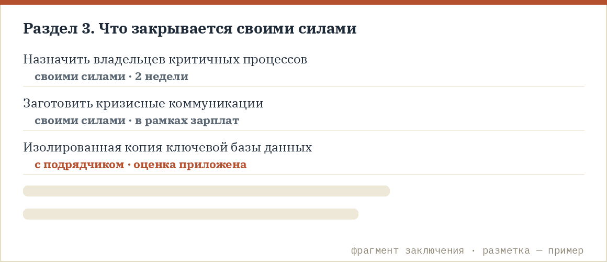
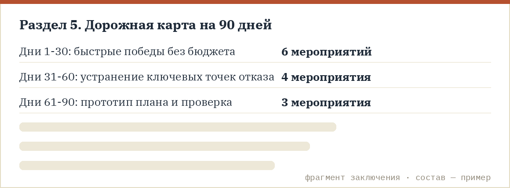

Место в программе
Программа BCM под ключ идет семью шагами. Проверка стоит пятой: к этому моменту мы уже знаем экономику компании, ее критичные процессы и людей, которые делают деньги. Теперь эти знания испытываются на сценарии.
| Шаг | Что происходит | Связь с проверкой |
|---|---|---|
| 01 | Выбор двух сценариев вместе с вами | Сценарии проверки |
| 02-04 | Факты и экономика, бизнес-модель, интервью с ключевыми людьми | Исходные данные: стоимость дня простоя, единые точки отказа |
| 05 | Проверка: компания проживает день Икс на бумаге | Этот разбор |
| 06 | Схема восстановления, спроектированная с командой | Строится по пробелам, найденным на проверке |
| 07 | Метрики выживания и их рост | Индекс проверки становится стартовой точкой |
Если система непрерывности в компании уже есть, программа начинается с проверки: она показывает, какие шаги достраивать, и объем работ собирается под найденное.
Как проходят 2 дня
День 1. Обследование и экономика. Полноценная диагностика системы непрерывности — больше ста вопросов по шести областям: критичные процессы, ИТ и данные, люди, поставщики, планы и финансовая устойчивость (это не бесплатный экспресс-квиз с сайта, а глубокое обследование с интервью ключевых людей). Параллельно считаем экономику: сколько стоит день простоя вашей компании и какую долю выручки вы потеряете при реализации риска — в деньгах, по вашей управленческой отчетности.
День 2. Стресс-симуляция «День Икс»: атака шифровальщика на вашу компанию. Берем самый показательный сценарий современности — утром не открываются файлы, на экранах требование выкупа, встали учетные системы и почта — и разбираем его в живом диалоге с руководителем и ключевой командой: кто первым заметит, кто вправе решать, что говорим сотрудникам и клиентам, как и за сколько восстанавливаемся. Это кабинетное тестирование — спокойный, управляемый разговор по сценарию, без театра и таймеров; никакие боевые системы не затрагиваются, но решения, пробелы полномочий и открытые вопросы в нем абсолютно настоящие.
Сноска: если шифровальщик для вашей отрасли не главный кошмар, подберем сценарий-аналог — авария на площадке, потеря ключевого поставщика, отказ ИТ. Но рекомендуем отрабатывать именно на шифровальщике: этот сценарий останавливает все процессы сразу и честнее всего вскрывает готовность.
Что получает генеральный директор
Конкретный расчет, во что обойдется день Икс: стоимость дня простоя, потери выручки, срок восстановления при текущем состоянии — цифры, а не оценки «высокий/средний/низкий».

Список слабых точек, которые есть уже сейчас, отсортированный по соотношению «цена риска / стоимость устранения».

Разметку «своими силами / с помощью»: какие дыры закрываются организационными мерами в рамках зарплат сотрудников — назначить ответственных, задокументировать, подготовить коммуникации, развести доступы — и как именно это сделать. По нашему опыту так закрывается заметная часть найденного, без дополнительных бюджетов.

План первых 90 дней — короткая дорожная карта, с которой команда работает самостоятельно.

Что происходит дальше
Заключение проверки становится рабочим заданием на оставшиеся шаги программы.
- Шаг 06, восстановление. По каждому пробелу из заключения команда вместе с нами проектирует действие: кто объявляет инцидент, куда переключаемся, что говорим клиентам. Люди исполняют планы, которые помогали писать сами.
- Шаг 07, метрики. Индекс устойчивости из проверки фиксируется как стартовый замер. Все, что чинится бесплатно, чиним сразу; то, что требует вложений, обосновываем расчетом ущерба и оставляем план.
- Повторная проверка. Через полгода или после крупных изменений тот же сценарий проигрывается снова, и разница индексов показывает, что изменилось на самом деле.
- Постоянный контроль. Чтобы индекс и цена простоя были видны руководству между проверками, их выводят на дашборд непрерывности.
- Обучение ответственного. Человек, который будет вести систему после программы, проходит сертификацию ERGP.
Артефакты на выходе
- Заключение для генерального директора (10-15 страниц, язык руководителя).
- Расчет ущерба в деньгах: стоимость дня простоя и доля выручки под риском.
- Модель влияния риска на бизнес-процессы: что и в какой последовательности останавливается.
- Карта единых точек отказа — ИТ, люди, поставщики, площадки.
- Оценка устойчивости: индекс 0-100 по шести областям (стартовая точка для будущих замеров).
- Наблюдения симуляции: где буксовали решения, какие полномочия не определены, оценка реального времени восстановления.
- Прототип плана непрерывности (BCP) под вашу специфику.
- Чек-лист первых 24 часов и заготовки кризисных коммуникаций — сотрудникам, клиентам, партнерам.
- Дорожная карта укрепления устойчивости на 90 дней с разметкой «своими силами / с подрядчиком».
Вопрос-ответ
Почему именно шифровальщик? Это единственный сценарий, который останавливает все процессы одновременно и проверяет сразу ИТ, людей, полномочия и коммуникации. Отработав его, вы готовы к большинству более простых сбоев.
Сколько людей и времени это займет у нас? Управленческая команда 6-10 человек: день 1 — интервью по 1-1,5 часа, день 2 — симуляция 3-4 часа единым блоком. Производство и операции не останавливаются.
Можно ли заказать только проверку? Проверка входит в программу BCM под ключ. Для компании, где система уже построена, программа начинается с проверки, и дальше выполняются только те шаги, которые нужны по ее итогам. Объем и цена считаются под эту задачу.
Что если система у нас уже сильная? Тогда проверка это подтвердит индексом и цифрами, а следующим шагом будет постоянный контроль на дашборде непрерывности.
Можно ли провести удаленно? День 1 (диагностика) — да. День 2 (симуляция) сильнее работает очно: решения и динамика команды видны только вживую. Для распределенных компаний собираем гибрид.
Проверка входит в BCM под ключ
Два месяца, фиксированный объем, бесплатные исправления включены. Проверка плана, восстановление, метрики и обученный ответственный остаются в компании.